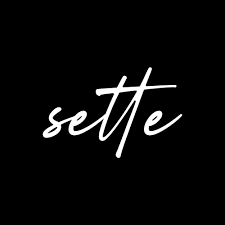

Ciao, sono Antonino!!
o Tonino!!
o Nino!!
Il Sacro Sette: Una Produzione "Daidone’s Brother"

Il Sacro Sette: Una Produzione "Daidone’s Brother"
"Cosa succede quando una 'cazzata' fraterna sfugge di mano? Nasce il Gioco del Setteh.
Quella che era iniziata come un’idea strampalata di mio fratello — l’elevazione del Sette a numero sacro — è diventata il cuore pulsante di un progetto ambizioso firmato Daidone’s Brother. Abbiamo preso questa ossessione numerologica e l'abbiamo trasformata in un gioco di carte collezionabili che attraversa il tempo: dalle antiche civiltà ai paradossi del mondo moderno, tutto ruota attorno al potere del Sette.
Progettare questo universo non è solo una sfida creativa, ma un vero esercizio di bilanciamento matematico (e di pazienza tra fratelli). Attualmente siamo nel pieno dello sviluppo della versione demo. Il nostro obiettivo? Rendere le meccaniche fluide, divertenti e, soprattutto, comprensibili a chiunque, non solo ai fanatici dei calcoli.
Vuoi aiutarci a plasmare il gioco? Presto sarà disponibile (su richiesta) un file di test per provare il gioco in anteprima. Stiamo cercando pionieri disposti a mettere alla prova il sistema, scovare bug strategici e aiutarci a rendere il Setteh un’esperienza fruibile per tutti. Restate sintonizzati, il sacro numero sta arrivando."